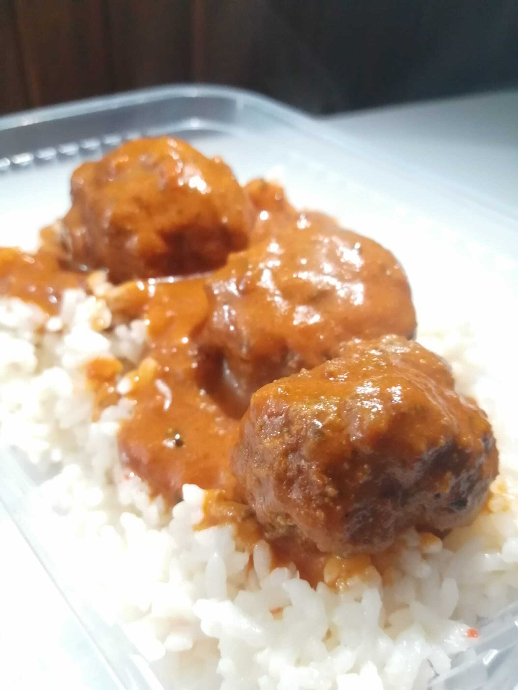
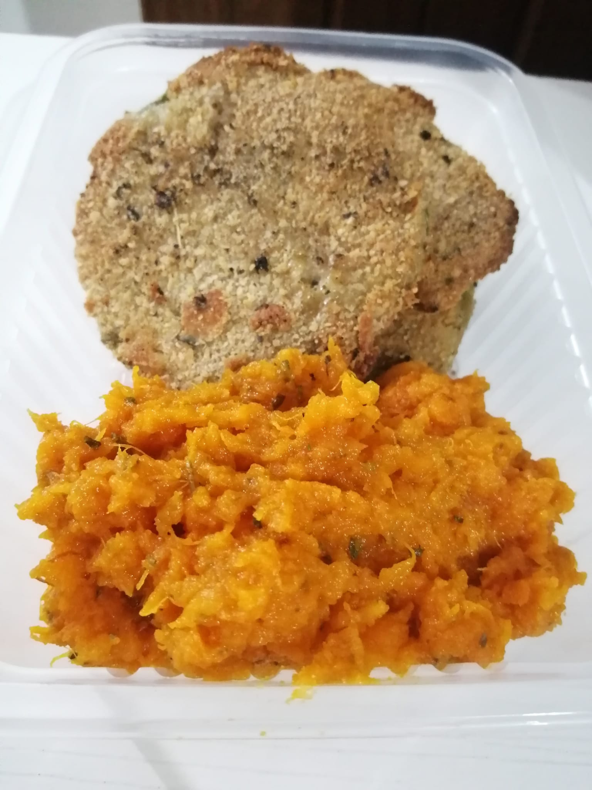

Nuestros productos!

Chop Suey de pollo
¿Cuál es el significado de chop suey? El Chop Suey es un guiso chino que se hace con carne, pescado o pollo con cebollas, arroz.

Albondigas con arroz
Una albóndiga es una bola de carne picada, generalmente de res y a veces de pescado mezclada con huevos y diversos condimentos, tales como perejil, comino, etcétera
Pan de carne
El pan de carne es un plato cuyo principal ingrediente es la carne, que consiste en carne picada de vaca, ternera, cordero o cerdo (a veces una combinación de algunas) y aliñada con pan rallado (a veces se le añade granos de cereales) y especias.


INICIO
Milanesa de zapallito con pure de calabaza
Receta creada por nuestra chef inspirada en la clasica milanesa rio platense
Arepas Veggie
La arepa es un alimento de origen precolombino, hecho a base de masa de maíz seco molido o de harina de maíz precocida, de forma circular y aplanada.
Tarta de panceta y queso
Elaborada con masa de trigo fina, rellena de panceta ahumada y queso muzzarella. Un plato muy comun en nuestro menu.